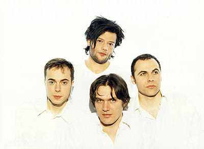

Diese Fanseite wird nicht mehr aktualisiert. Für Neuigkeiten besucht die offizielle Website der Sterne.
Diese Seite soll Geschichte, Entstehung und Urspünge der Band Die Sterne erhellen.
Eine Beitrag über die Anfänge der Sterne findet sich im »Kompendium der deutschsprachigen Subpopkultur« yeti-net.de: Die Sterne vor den Sternen.

Kontakt mit der Band kann der eifrige Fan mittels diverser E-Mail-Adressen aufnehmen, welche auf der offiziellen Webseite vermerkt sind.
Die folgende Biografie von Petra Wulf sowie das Gespräch mit Tobias Levin wurden der ehemaligen offiziellen Sterne-Webseite entnommen. Falls die Autoren die Wiederveröffentlichung nicht wünschen, so schicken sie mir bitte eine entsprechende Nachricht, sodass ich die Texte durch einen Verweis auf das Webarchiv ersetzen kann.
Dieser Teil gehört insofern zur Geschichte der Sterne, als darin schon ihr Name vorkommt. Mitte bis Ende der Achtziger gab es in dem Provinznest und Kurgäste-Dorado Bad Salzuflen, Ostwestfalen, das Pop-Label Fast Weltweit, das ein paar Singles und Cassettensampler rausbrachte. Aus diesem Zusammenhang kommen Bernadette Hengst (heute Die Braut haut ins Auge), Jochen Distelmeyer (heute Blumfeld), Bernd Begemann (heute Bernd Begemann), ein paar andere und eben Frank Spilker, dessen Band schon damals Die Sterne hieß. »Der Name ist übriggeblieben«, sagt Spilker, »von den Zeiten, als ich noch zusammen mit ein paar Freunden, die sich auch gelangweilt haben, in einem Wohnzimmer auf dem Land an kleinen fiesen Popminiaturen bastelte, die niemand hören wollte.« Als er damals mit Mirko Breder und ansonsten wechselnder Besetzung Musik machte, griff Spilker zu »Die Sterne«, damit das kein anderer mehr tun könnte und der Name erstmal vergeben wäre. Die alten Lieder werden heutzutage höchstens noch auf Privatparties hinter fest verriegelten Türen mit geneigtem Kopf vorgetragen, also sagen wir lieber: gar nicht.
Irgendwann ist Bad Salzuflen nicht mehr so super und Frank Spilker zieht nach Hamburg. Er lernt Bassist Thomas Wenzel (vorher u.a. Calamity Jane) und Frank »Orgel« Will (hat kurz bei Huah! Saxophon gespielt) kennen, die sich bei der Arbeit im Hafen über den Weg gelaufen sind. Dann kommt Christoph Leich, Schlagzeuger bei der gerade aufgelösten Kolossalen Jugend dazu. Da gibt es wieder »Die Sterne«. Hier fängt die Geschichte an.
Kurz darauf gibt es ein paar Auftritte als Serge-Gainsbourg-Coverband, unter anderem im Hamburger »Subito«, dem einiges nachgesagt wird. Aus einem ersten Versuch, gemeinsam ein Stück zu schreiben, wird »Eifersucht spricht«, das auf der Split-Maxi »Eifersucht« (L’AGE D’OR) erscheint, mit Mobylettes und Huah! Christoph Leich singt. Die Sterne und L’AGE D’OR beschließen kurz darauf, langfristig zusammenzuarbeiten und zum Labelsampler »Billiger als Turnschuhe« steuern sie »Jetzt nicht« bei.
Bei allen vier Sternen ist gegenüber Indierock nur noch ein schaler Überdruß geblieben - eine nicht zuletzt im Zuge ihrer Kommerzialisierung ausgehöhlte Form, die selbst zusehen soll, wo sie weitermacht. Man hört Soul und HipHop. Die Sterne begeben sich an das Experiment einer Musik, deren Struktur sich vom Rhythmus her entwickelt. Nicht schlecht, wenn sie als Nachrichtenmaschine funktionieren könnte; insofern ist HipHop ein Vorbild. Spilker gilt auch die Kolossale Jugend als Inspiration, wo Kraft und Unterschwelligkeit gleichzeitig anwesend sind, ohne sich gegenseitig was wegzufressen.
Bevor im August 1992 die Maxi »Fickt das System« erscheint, absolvieren die Sterne mit einer Handvoll Stücke eine Handvoll Konzerte. Das Publikum findet sich schön überfallen, als es merkt, daß es vor lauter Zuhören anfängt, zu tanzen. Daß der klassische Rockaufbau und Gehabe für die Sterne ausgedient haben, kann man auch beim Zusehen feststellen: in loser Reihe ordnen sich die Musiker auf der Bühne an, um das Schlagzeug in der vorderen Mitte. Die Gitarre ist hier ein Instrument unter anderen, während es Thomas Wenzels Baßfiguren und Christoph Leichs antreibende Schlagzeugarbeit sind, die sich über den Drive der Stücke verständigen. Wills Orgel tut ein übriges an Schönheit und Psychedelia. Das Schlagzeug, das den Rhythmus hüpfen macht, läßt in der Zeit einige auch an Rave erinnern, und spätestens mit Erscheinen der Maxi wird das Wort Groove- ähem-Rock erfunden, worin sich die Band so mittelwohl fühlt. Die Sterne haben über HipHop- Samples den Funk der Siebziger liebengelernt, George Clinton, Sly and the Family Stone, und davon erzählt fortan auch ihre Musik.
»Fickt das System« ist auch so etwas, das gesagt werden mußte, damit es sonst in dieser Form keiner mehr tun konnte, hier allerdings eher als Nachtrag. Denn während der Kehrvers die Parole ausgibt, fragt der Rest des Songs schon lange danach, wie weit Slogans 1992 noch greifen können. Lieber unterhalb der Schwelle weiterarbeiten, wo Pathos und Parole miteinander fangen spielen. Die Maxi enthält noch drei weitere Stücke, darunter das klasse Instrumental »Alles wird teurer«, das schon zeigt: bei aller Spielfreude und Bewegungs-Animation sind die Sterne an geölten Muckerfähigkeiten keineswegs interessiert, sondern an Widerhaken und Nachhaken.
Trotz einer grundsätzlichen Entscheidung für deutsche Texte (weil sie darin am präzisesten sprechen können), sind die Sterne nicht bereit, diese auch noch jedem vorzubuchstabieren. Bei einem Konzert in Frankfurt fordert jemand Verständlichkeit, Spilker kontert: »Mitschreiben!«
Bis Ende 92 arbeiten die Sterne mit Carol von Rautenkranz (L’AGE D’OR Mitbetreiber) und seinem Bruder Chris (heute schon fast eine Produzentenlegende) in Mühlheim/Ruhr und Köln an ihrem ersten Album, die Studio-Stunden nutzend, die L’AGE D’OR bei dem NRW-Förder Preis für »innovative Arbeit in der Musik und Medienlandschaft« gewonnen hat. Vor Ort im Ruhrgebiet ergeben sich Zusammenarbeiten mit einigen dort ansässigen befreundeten Musikern. So sind als Gäste auf »Wichtig« Thies Mynther (Allwissende Billardkugel), Achim Weigel (Carnival of Souls), Pascal Fuhlbrügge (Ex Kolossale Jugend) und Flowerpornoes’ Tom G. Liwa zu hören.
Gelegentlich führt der Titelsong »(ich bin) wichtig« zu dem Mißverständnis, die Sterne nähmen sich zu wichtig. Tatsächlich halten sie sich nicht für unwichtig, doch wird übersehen, daß »die Ichs und Dus der Sterne-Texte immer herhalten für andere, und für Kommunikation« (Liwa). In »Hier«, ihrem Kommentar zum Verhältnis von Nation und Gewalt und neu-rechten Pogromen in der Bundesrepublik, zitieren die Sterne Sonic Youth mit »it’s the song I hate« (aus »Youth against Fascism«). Ansonsten liegt hier das Sterne-Universum von eigener Energie dem Hörer vor Ohren. Funk meldet sich nicht nur im Anschlag der Gitarre; Spilker spricht und ruft mehr, als daß er singt. Eine Melancholie ist immer da, wird vom Rhythmusgefüge angestoßen und tritt mitunter »ins Empfindlichste«, das manche Männer an sich hängen haben. Die andere Referenz der Sterne, Ton Steine Scherben, klingt nicht nur in Spilkers Intonation an, sondern bekommt auch in der draufgängerischen Coverversion von »Jenseits von Eden« ihre Verbeugung.
Die Presse freut sich bundesweit sehr über »Wichtig«, mancher bedauert, daß die Single »Fickt das System« nicht drauf ist, Punk-Fanzines schreiben schöne Verrisse. Im Prinz wird sie Platte des Monats.
Zur Platte gibt es eine Tournee durch 20 Städte, viele Auftritte gemeinsam mit Das Neue Brot, im Ruhrgebiet auch unterstützt durch Tom G. Liwa. Die Tour heißt »Aspirin und Drogenbeat Tour« und funktioniert anhand eines Konzepts, das DJs einbezieht. Die DJs Robert Varga (Mojo Club), Pascal Fuhlbrügge (L’AGE D’OR Mitbetreiber) und Ale Sexfeind (Buback Tonträger) sorgen für die Überleitungen zwischen den Sets, die Band improvisiert gelegentlich auf den vorgegebenen Beats. Es kommt zum »arrogantesten Konzert« der Sterne, bei dem sie 40 Minuten am Stück spielen. Das Partykonzept, eine Clubatmosphäre herzustellen und die Leute nach dem Konzert zum Bleiben zu bringen, hat allerdings seine Grenzen. Viele wollen Konzert und Party lieber getrennt haben.
Im Juni beteiligen sich die Sterne an »Etwas besseres als die Nation«, einer mit Konzerten und Party begleiteten Aktionstour durch drei Städte der neuen Bundesländer. Die Initiative geht vom Wohlfahrtsausschuß Hamburg aus, zahlreiche linke Gruppierungen beteiligen sich, Ziel ist es, den öffentlichen Raum - nicht nur symbolisch - gegen rechte Angriffe zu verteidigen. Außerdem fahren mit: die Kastrierten Philosophen, Absolute Beginner, Blumfeld, Extended Versions, Goldene Zitronen u.a.
In Interviews müssen sich die Sterne, wie die anderen auch, immer wieder gegen eine vereinheitlichende Wahrnehmung als »Hamburger Schule« verwahren. Tatsächlich erschöpfen sich die Parallelen im reflektierten Einsatz einer Sprache, die »deutsch« nennen kann, wer das braucht, und dem regen Austausch zwischen den Bands.
Im Juli 1993 dreht Charlotte Goltermann für 600 Mark das Video zu »Wichtig«: In der Mitte eines Fußballplatzes steht ein Wohnzimmer herum; im Fernsehen sagen Prominente vermutlich »ich bin wichtig«. Im Zusammenhang mit dem Video kursiert ein Zettel, auf dem steht »Frank Spilker ist ein Arschloch«. Dementis sind nicht bekannt.
»Sie haben Bestandteile des Soul und Funk aus den 70er Jahren geklaut/gesampelt und mit den Erfahrungen der 80er/90er-Jahre-Subkultur verbunden«. Kurz nachdem dies vom »Foyer« festgestellt worden ist, machen die Sterne Erfahrungen mit der 90er-Jahre-Kriminalkultur und werden selbst beklaut, im höchst materiellen Sinne: im Juli wird ihr Übungsraum in Hamburg-Hamm leergeräumt, Instrumente im Wert von 10.000 Mark sind weg. Auf Anzeigen und Plakate hin meldet sich niemand. Die geplante Tour durch Österreich und Süddeutschland muß trotzdem nicht abgeblasen werden, sondern findet mit von Freunden geliehenem Equipment statt.
Daß sie sich allmählich wieder eigene Instrumente zulegen werden, ist wahrscheinlich, denn der Zuspruch des Publikums reißt nicht ab. Die LeserInnen der Spex setzen die Sterne unter den Newcomern des Jahres auf Platz 17.
Nach einem Solikonzert, das ein paar Bands im Februar im Hamburger Knust zugunsten der Sterne-Bandkasse halten, geht es ans zweite Album (zu Chris von Rautenkranz ins Soundgarden Studio), das im Mai 1994 erscheint.
»In echt« ist fast ein Konzeptalbum, wie es da um das Essen kreist - in echt oder virtuell; dabei könnte »In Echt« genauso gut »Nicht wirklich« heißen, im Nebensatzsinne. Es handelt sich weniger darum, mit »echtem« Essen unbedingte Authentizität einzufordern, sondern vielmehr nachzufragen, was das eigentlich sein soll, und noch viel mehr, was man tut, wenn man wach ist. »Daß jeder Mensch das Recht hat selbst zu entscheiden, was subjektiv, real, echt, falsch, surreal oder virtuell ist.« (Spilker). Ein gelegentliches schweres Rockriff wie in »Vorabendprogrammredakteur« ist sicher nicht identisch mit dem, wo es herkommt; und »Il Silenzio« mit dem berühmten Trompeter Josef Thoene erblickt zu seinen Füßen einen Baßzauber, den es aus dem Seniorenradio nicht kennt. Zu nervös, um zu sich kommen zu wollen. Bei »Es möchte echt sein« scratcht MAD von den Absoluten Beginnern. Außerdem gibt es natürlich die beiden Hits »Du darfst nicht vergessen zu essen« und »Universal Tellerwäscher«. Letzterer ein Gitarrenpopsong mit Mitsingappeal, nicht super repräsentativ für die Sterne-Musik in ihrem vollen Umfang, und doch der Sommerhit, der es dann doch nicht ganz werden sollte (in Verkaufszahlen gemessen).
Begeisterte Besprechungen in der Jungen Welt, Tip, Kreuzer, Tempo und anderswo. Nicht nur der Prinz (wieder mal) macht »In echt« zur Platte des Monats, wenn nicht des Jahres, oder auch zur Musik für die Neunziger (Spielhölle).
Motor Music, die über den L’AGE D’OR-Labeldeal mit den Sternen zu tun haben, entscheidet sich, die Single »Universal Tellerwäscher« rauszubringen und ein Video dazu zu produzieren: Darin laufen die Sterne und andere Leute vor der Hamburger Werft »Blohm + Voss« herum, ein alter Mann dreht Fototapeten über eine Kurbel; wie ein richtiger Mann in den echten Filmstudios dieser Welt. Ein Händlerinfo erzählt die andere wahre Geschichte, worum es dem Tellerwäscher wirklich geht: »es ging ihm nicht um das große Geld, sondern um seinen Lebensinhalt: das Spülen«.
Der »Tellerwäscher« kommt im Herbst in die Heavy Rotation bei VIVA, wo er sechs Wochen bleibt. Diverse Radiostationen spielen den Song rauf und runter, für viele DJs ist es der »Sommerhit«. Die Tour im September läuft auch super, wobei vielerorts nach Vinyl gefragt wird: »Wichtig« und »In echt« gibt es bislang nur auf CD; es wird gleich die nächste Konzertreise für Februar geplant. Das können die Sterne ja auch so gut: live spielen, denn das Improvisieren ist wichtiger Teil ihrer Arbeit.
Am Ende des Jahres sind die Sterne in den Charts der meisten deutschen Magazine vertreten, z.B. in cut auf Platz 1, im Spex Leserpoll auf Platz 9 mit »Universal Tellerwäscher«.
Erstmal gehen die Bandmitglieder anderen Dingen nach. Thomas Wenzel, einer der meistbeschäftigten Hamburger Musiker, tourt mit seinen anderen Bands (Die Goldenen Zitronen, Naked Navy, Die Stars). Christoph Leich gibt Schlagzeugunterricht, Frank Will studiert Garten- und Landschaftsbau und Frank Spilker arbeitet im Golden Pudel Club.
Im Februar 95 treten die Sterne bei der »Irmgard Möller: Out Now Party« in der Roten Flora auf. Der Song »Wichtig« ist der Sterne-Beitrag auf dem Big- Cat-Sampler »Sturm und Twang!«.
Via Rough Trade Vertrieb erscheint die Doppel-LP »Unter Geiern«, die nicht als Best-Of-Platte hochstapelt, sondern fast alle Stücke der CDs plus Bonustrack »Swinging Safari« enthält, um dem Vinylbedarf seine Schuldigkeit zu erweisen; der L’ AGE D’OR-Vertriebsdeal mit Rough Trade war just 2 Wochen vorher abgeschlossen.
Währenddessen wird an der Vertragsfront gerungen. Daß ›Professionalisierung‹ dabei das falsche Stichwort ist, mag folgender Dialog aus der taz im Mai 95 illustrieren: taz: »Ist es nicht auch eine Unterscheidung zwischen Musik als Beruf oder Hobby?« - Spilker: »Wenn ich einen Beruf hätte, vielleicht.« Vielmehr streben die Sterne an, ein breiteres Publikum zu erreichen und damit ein »Ghetto« zu überwinden, das sich ihnen weniger als lokales, denn als ein szene-bedingtes darstellt.
Nach achtmonatigen Verhandlungen mit Epic kommt es schließlich zum Abschluß eines Vertrages von ungefähr dem Umfang eines Telefonbuchs, und für mindestens zwei Platten. Kern des Vertrages ist die weiterentwickelte Zusammenarbeit zwischen den Sternen und L’AGE D’OR. Lado übernimmt jetzt eher die Produzenten- und Managementrolle, arbeitet aber auch weiterhin in der Promotion mit und bringt die Vinylausgaben der Platten raus.
Im Herbst touren die Sterne nochmal durch Deutschland und die Schweiz, unterstützt unter anderem durch Knorr’s 0:0 (ehemals Der Fremde). Vor, zwischen und nach dem Touren geht’s immer wieder ins Hamburger Soundgarden Studio wo mit Chris von Rautenkranz an der neuen Platte gearbeitet wird. Im Januar ’96 präsentieren sie erstmals in einem Hamburger Kino die Songs ihres neuen Albums »die sie live schon können«, und einen ihrer Lieblingsfilme: »Lohn der Angst«.
Im März, kurz vor Erscheinen von »Posen«, laden die Sterne zum Posen in die Markthalle. Unter der Regie von Ted Gaier dreht dort Smoczek Policzek das Video zur Single »Ruiniert«. Dasselbe Team wird auch die beiden folgenden Videos produzieren. »Ruiniert« ist, ähnlich wie der »Tellerwäscher« eine eher straighte Rocknummer und nicht ganz typisch für die Sterne. Das bestellte Publikum soll die Massenszenen spielen, denn im Video geht es um Rockzirkus, Rockposen, das Spiel der Plattenkonzerne und wie dumm die Band dabei aus der Wäsche guckt.
»Ruiniert« kommt in MTV und VIVA-Rotationen und wird gern gesehen.
Ebenfalls im März treten die Sterne mit Tortoise, Blumfeld und Bif Naked bei »the frankfurt alternative« im Rahmen der Frankfurter Musikmesse auf. Leider gibt es für die Bands eine zeitliche Vorgabe von 45 Minuten, so daß kaum mehr als Warmspielen drin ist.
Die Veröffentlichung von »Posen« fällt ungefähr zeitgleich mit dem Höhepunkt eines Trends zu deutschsprachiger Musik um jeden Preis, die in der von Heinz Rudolf Kunze losgetretenen Debatte um Quotenradio gipfelt. Kunze fordert eine nationalistisch und nationalökonomisch begründete Quote, die der Förderung »deutschsprachigen Liedgutes« zugute kommen soll.
Das Sterne-Album »Posen« eröffnet mit dem Stück »Scheiß auf deutsche Texte«. Es macht einen entschiedenen Punkt und beleuchtet ihn von zwei Seiten: es ist nicht wichtig, in welcher Sprache, sondern was da gesungen wird; zugleich aber ist die deutsche Sprache in Deutschland ein Privileg, was klar wird, wenn man sie nicht spricht, zumal eine Menge Scheiße in deutscher Sprache abgewickelt wird, nicht zuletzt Kunzes Quotendebatte.
»Posen« ist ein Pop-Album reinsten Wassers. Dabei verabschiedet es sich nicht von dem bis hier entwickelten Stilrepertoire der Sterne, sondern fährt dessen Komponenten bis zum Ende aus. Daher der Name Posen. Die Zitate werden freier ausgestellt, dazu kommen Animals, Hawkwind, Pink Floyd und wieder Ton Steine Scherben; Zitate, mit denen die Sterne einen frei kommentierenden Umgang pflegen. Zwei Disco-Stücke (»Inseln«, »Trrrmmer«), Drogenmusik und Musik über Drogen (»Risikobiographie«, »Zucker«) und so fort. Und beste Sätze gibt es geschenkt dazu, zum Beispiel in »Themenläden«, dem Song zum Befragen der eigenen Zusammenhänge, und der der anderen.
»Posen« steigt im Juni für in die offiziellen deutschen LP Charts ein, verbleibt dort 9 Wochen und schafft es bis auf Platz 64. Von 17°C über Szene Hamburg bis zur Frankfurter Rundschau, vom Musikexpress bis zur Musikwoche ist man sich einig, daß die Sterne »nie so wertvoll waren wie heute«. Selbst die Evangelischen Kommentare und die F.A.Z. verirren sich auf Konzerte bzw. ins Textheft. Alle reden von Spilkers Zahnlücke, Prinz stellt fest, daß er lange Arme habe - aber was soll ein langer Mann machen? Kurze sähen nicht aus.
Am 13. Juli sind die Sterne Vorgruppe zu Bob Dylan und Neil Young auf der Hamburger Trabrennbahn: »ab der fünfzigsten Reihe konnte ich sogar ein paar Sterne-Fans erkennen« - alte Herren und Backstage- Pässe, auf denen »no backstage« steht.
Ansonsten wird das Livepublikum (sie touren jetzt mit Concord, Stereo Total oder Les Robespierres) der Sterne seit dem »Tellerwäscher« etwas jünger, »aber noch nicht so jung wie das von Tocotronic«. Zu Beginn der Konzerte zu »Posen« lassen die Sterne »Unter Geiern II«, das Stück, in dem sie sich selber loopen, vom Band laufen; am Schluß spielen sie es als Zugabe live. Denn schließlich ist Spielbarkeit noch immer zentrale Vorgabe für alle Stücke, die sie aufnehmen, und die Liveversion ist jedesmal ein neuer Hammer. (Festgehalten ist davon eine Version stellvertretend für alle, plus Orgled Remix von Sand8, auf der im Oktober erschienenen Maxi). Außerdem stellen sie live ein neues Stück vor, »Widerschein«, das sie nebenbei als Toursingle ausschließlich auf Vinyl-7« veröffentlichen: es ist eines der besten, das sie je gemacht haben. Sie steuern es auch für einen Sampler namens »Die Pauli Platte« (November 96/Offside Records) bei, auf dem Hamburger Bands dem jetzt wieder Zweitligisten huldigen.
Im September wird »Posen« nominiert für den Preis der Deutschen Schallplattenkritik; wird aber nichts.
Im September reisen die Sterne nach Marseille, um, der luftig-schwülen Atmosphäre des Stücks entsprechend, das Video zu »Trrrmmer« von Sonne durchfluten zu lassen (und nochmal eine Art Urlaub zu haben). Auch »Trrrmmer« wird remixt von Sinus Albino und Egoexpress, die das Stück anders tanzen lassen, lasziver.
Für »Themenläden« wurden Remixe in Auftrag gegeben, die zunächst auf auf zwei Vinylmaxis erscheinen, dann komplett auf CD. Das abstraktoide Cover-Artwork von Bianca Gabriel wird bewundert; jemand nennt es »amphetaminkaterartig«. Das Thema von »Themenläden« lädt ja zum Remixen geradezu ein: jeder kann sich bedienen, der das kann. Es entstehen hoch unterschiedliche Beiträge in jeweiliger Handschrift von Rockers Hi-Fi, Le Hammond Inferno, Hans Nieswandt, Der Tobi und das Bo, Peter Thomas, Pulsinger & Tunakan, Sand 8 und Egoexpress.
Die Aprilausgabe des US-Musikmagazins Raygun, dem mit dem berühmten Layout (inzwischen etwas abgefrühstückt), bringt ein Feature über »neue Hamburger Bands« als Modestrecke: Tocotronic, Rocko Schamoni, Stella, Fink, und auch bei den Sternen ist schönes Aussehen zu beobachten.
Das neue Album kündigt sich bereits Monate vorher in Anzeigen an: scheint interessant werden zu wollen.
Kurz vor der Interviewtour zur neuen Platte im Mai geht Christoph Leich noch schnell auf Kurztour mit seine neuen Zweitband Derrick, bei der er auch Schlagzeug spielt.
Im Juni 1997 erscheint das vierte Album der Sterne. Es hätte auch »Abstrakt« heißen können, denn darum geht es, aber Frank Spilker hat gesagt, daß es blöd ist, wenn man einfach draufschreibt, was drin ist. Daher heißt die Platte »von allen gedanken schätze ich doch am meisten die interessanten«. Das Titelstück »die interessanten« wird als erste Single ausgekoppelt, und die abstrakt-geometrische Gestaltung des Covers setzt sich bis ins Video fort, ist jedoch nur der Schauplatz, vor dem konkrete Dinge stattfinden. Es gibt Reflexionen über den Alltag einer Rockgruppe (eine Konstante in Sterne-Werk, hier »tourtagebuch«), ein neuer Tanz mit Affen wird erfunden (»1-2-3-tier«), ein getragener Song für Leute, die nicht nach Hause wollen (»bis neun bist du o.k.«), ein schleichendes Gift (»ganz normaler tag«). Und, besonderer Höhepunkt und Stand der Dinge, die Sterne-definition of soul: »klebrig - vermutlich«.
Tobin Levin ist Produzent (beispielsweise des Tocotronic-Albums »Tocotronic«) und war einst Sänger von »Cpt. Kirk &«.
Tobias Levin: Seit ich das erste Mal von eurem Bandnamen hörte, habe ich mich über ihn gewundert. Der war so einfach und zeigte ein so strahlendes, fernes Ziel. Darin lag ein Wünschen und Sehnen, das ich immer auf eure Musik und die Texte projiziert habe. Wo kam der Name her?
Frank Spilker: Von mir, aber eigentlich wollte ich ihn gar nicht benutzen. Ganz am Anfang habe ich es für eine gute Idee gehalten, so ein wirklich simples Wort an eine Band zu ketten. Damit es für eine Rockband vergeben ist (lacht). Weil man es die nächsten zwanzig Jahre nicht wieder tun kann. Das fand ich gut.
Tobias Levin: Ein eher strategisches Argument.
Frank Spilker: Ja, genau. Das war auch 1987. Die Band gibt es so aber erst seit 1991.
Tobias Levin: Dieser Begriff ist aber auch assoziativ so aufgeladen, daß er nie seine Kraft verlieren wird. So bin ich darauf gekommen, euren Namen zusammen mit dem Funktionieren der Gruppe als Paradiesexperiment zu lesen. Es mit Musik versuchen, anstatt einen anderen Lebensweg zu gehen: Überschrift: Die Sterne. Ort der Handlung: Die Erde.
Frank Spilker: Interessant. Das erinnert mich an Bloch. Die Idee von »Unland« auf der letzten Platte »In Echt« Bloch hat ein Utopiewerk geschrieben. Ein Gedanke dabei ist, daß der Begriff von Topos, also Ort, kommt. Utopia ist demnach ein Nichtort. Das habe ich mit »Land« und »Unland« übersetzt. Für Bloch gibt es Utopia nämlich nur als zeitlich oder räumlich versetzten Ort. Eine Insel also, oder eine Zukunftsvorstellung. Nicht als mystisches Jenseits, wie in der christlichen Lehre. Aber auch die Urchristen haben das nach Bloch so nicht gemeint. Heute bedeutet Utopie, wie sie von rechts gesehen wird: »Irgendwelche linken Spinner denken sich etwas aus, das hoffentlich nie eintritt«. Genau gegenteilig ist der Versuch, das von uns zu besetzen. Also Utopie im Sinne von: »Es dauert nicht mehr lange.«
Tobias Levin: Ihr habt Zeilen, auf »Posen« oder »In Echt« - zum Beispiel »Weg von der Stelle, wo das Loch ist/das dich auffrißt« - denen ich entnehme, daß es bei euch ein starkes Wegwünschen von den Klippen des Lebens gibt.
Frank Spilker: Wobei mir immer wichtig ist zu sagen, daß ich etwa mit Songs wie »Du darfst nicht vergessen zu essen« ganz bewußt Dancefloor-Knaller benutzt habe, um das Phänomen zu beschreiben: Wie weit kann so etwas gehen, also Ausweglosigkeit empfinden, Abhängigkeit und Ratlosigkeit, wie bis zum Äußersten selbstzerstörerisch kann das sein? Und dann mit so einem knallenden Stück zu betonen, daß man damit nicht alleine ist und es irgendwoher kommt.
Tobias Levin: Was meinst du damit, es käme irgendwoher?
Frank Spilker: Daß der nächste Schritt ist, sich darüber Gedanken zu machen, warum man nicht funktioniert und daß man vielleicht auch nicht selber Schuld ist, mit seinen Talenten rumzuhängen und nirgendwo Anschluß zu finden. Oder nur da Anschluß findet, wo man ihn nicht haben will.
Tobias Levin: Du schaffst oft zweiseitige Szenen, in denen die einen Jobs und Verantwortung für Zustände haben, mit denen Leute auf der anderen Seite, oft ohne Jobs, zurechtkommen müssen. Sie leben sozusagen in Luxustrümmern. Darauf baust du paradiesische Szenarien auf: »Wir hatten Sex in den Trümmern und träumten«. Als wäre das eine zu romantische Sicht der Dinge, folgt dann: »Wir fühlten uns ganz schön bedeutend«. Als würdest du das Kitschige im Bild angreifen.
Frank Spilker: Nein, das verstehe ich nicht als Angriff, sondern als einzige Möglichkeit, Kitsch überhaupt noch zu legitimieren. Weil so ein Mittel wie Pathos oder Kitsch einem wirklich genommen ist, wenn man diesen Kniff nicht anwendet und das Bild selbst bricht. Man kann bei »Trümmer« sagen, daß man gleichzeitig einem kitschigen Gefühl unterliegt, aber dennoch danach handelt, also sich an dem Kitsch erfreut. Das heißt ja nicht, daß man kein Bewußtsein dafür hat, woran man sich da erfreut. Ich mag Disney-Trickfilme etcetera.
Tobias Levin: Würdest du sagen, daß man dich in deinen Texten grundsätzlich als identifizierbaren Autor lesen kann? Bist du das Ich?
Frank Spilker: Grundsätzlich? Nein, es herrscht ein ganz gebrochenes Verhältnis zum Ich. Ich spiele gerne mit der Perspektive, wobei ich bei dieser Platte ziemlich überzeugt bin, daß es relativ klar ist, ob dieses Ich jemandem in den Mund gelegt wird, oder ob ich mich selbst damit meine. Ich denke mir das Ich aber auch immer wieder neu aus, stelle mir zum Beispiel eine extremere Version von mir vor. Oder irgend etwas in mir oder in meinem Leben ist als Aspekt herausgegriffen und das Ich spielt dann eine Rolle.
Tobias Levin: Stammt dann die Kulisse deiner Texte, ländliche und städtische Umgebungen, aus deinem Leben?
Frank Spilker: In dem Sinne, wie ich es eben erklärt habe. Das ist mein Werdegang. Kleinstadt, Jugend, Hamburg und jetzt Minimetropolenhopper oder so. Ich merke, daß ich viel von den ganzen Tourerlebnissen mitnehme, wenn ich über Texte nachdenke. Beobachten, Vergleiche ziehen. Ich habe die Kleinstadt, aus der ich komme, früher immer als ziemlich extremen Ort empfunden und durch Tourgeschichten gesehen, daß es überall so ist. Schrecklich.
Tobias Levin: Trotzdem flirtest du mit ländlichen Bildern. Und die Kulissen der Städte scheinen mir zumeist vergleichsweise erschreckend. Zum Beispiel bei »Scheiß’ auf deutsche Texte«, Barszenarien. Die klingen unangenehmer, als wenn du von Bäumen oder Bächen erzählst...
Frank Spilker: ...Kindheitserinnerungen. Die Bäume und Bäche sind Kindheitserinnerungen, das ist nicht wirklich so auf dem Land. Und die Bars dort sind ja wirklich Horror, schlimm. Abfüllstationen. Du denkst bei Bar automatisch an Stadt, das ist ein Denkfehler, glaube ich.
Tobias Levin: Ich habe wirklich das Gefühl, daß Leute in deinen Texten von einem anderen Leben, vielleicht auf dem Land, träumen. Was meinst du hält sie denn in der Stadt?
Frank Spilker: Ich sehe das überhaupt nicht so. Ich würde persönlich nicht aus der Stadt wegwollen, um 20 Jahre lang in irgendeinem Dorf der Neue zu sein. Vielleicht wünsche ich mir, daß die Stadt mehr bietet, von dem was man möglicherweise aufgegeben hat. Die Weite ist hier schwer zu haben, sich irgendwo hinstellen, bewegen, nicht angesprochen werden und Land halt, Landluft. Dafür jettet man dann jetzt irgendwie raus.
Tobias Levin: Es gibt wohl auch keine neue Musik, die ernsthaft ländliche Ideale präsentiert. Sowohl der reale wie der imaginäre Schauplatz, selbst von so hippiesquem Ambient-Techno, ist die Tanzfläche in den Zentren. Alles will sich hier etablieren, nichts auf dem Land. Sind Bands wie Die Sterne zum Leben in der Stadt verdammt? Das helle Leuchten, die sozialen Ereignisse, ist das Land kein Ort mehr?
Christoph Leich: Ich kann mir das Arbeiten von den Sternen, wie wir uns alle darauf eingeschossen haben, nicht auf dem Land vorstellen, weil es da wenig Austausch gibt.
Frank Spilker: Solche Ambient-Sachen, also alles, was ein bißchen spezieller ist, spielen sich ja in der Stadt ab, weil sich woanders meist nur über Mainstream eine Gemeinschaft zusammenbringen läßt. Viele fahren ja total weit, um zum Beispiel ein Konzert von uns zu sehen. Da trifft man sie dann. Aber sie holen sich auch, was sie wollen. Dafür sind Konzerte, ist diese Clubszene total wichtig, weil dort die seltenen Ereignisse dieser Art stattfinden. Und das macht auch Spaß am Touren.
Tobias Levin: Ich muß an die Ton Steine Scherben denken, die ihr schon auf eurer ersten Platte mit »Jenseits von Eden« gecovert habt und die auf »Posen« manchmal durchklingen. Warum habt ihr euch auf sie bezogen?
Frank Spilker: Ich seh bei den Scherben schon einen urbanen Geist. Das Sich-Zusammenschließen, weshalb ich solche Sachen auch immer zitiere: »Allein machen sie dich ein"« Also etwas, was sich eigentlich gegen eine Teilung in Grüppchen und Untergrüppchen wehrt und einen größeren Zusammenhang schafft, der sagt, ok, wir haben hier soundsoviele verschiedene Subkulturen, das nutzt uns aber nichts beim Kampf um die Häuser, worum es ganz pragmatisch ging. Und das ist ein Geist, den ich ziemlich vermisse. Ansonsten kann man sich Hippiekultur heute wohl eher sparen. Als ich 15 Jahre alt war, waren solche Leute in Ostwestfalen lustigerweise die Exoten. Da hatten sich ziemlich absurde Kolonien aus den 70ern erhalten. Man mietete zu fünft einen Kotten und lebte genauso, wie es die Hippies in der Stadt machten. Am gesellschaftlichen Landleben haben die dort überhaupt nicht teilnehmen wollen
Tobias Levin: Und der musikalische Bezug zu den Scherben?
Frank Spilker: Ich glaube, der passiert fast unbewußt. Ich kann mir aber vorstellen, daß bei den Sternen jetzt wieder sowas durchbricht. Dadurch, daß wir bei dieser Platte ein bißchen weniger bewußt zitiert haben. Wir haben ein paar Stücke, wo klar ist, woran sie angelehnt wurden. Aber auch viele, die nur aus einem Basslauf entstanden sind und dann gemeinsam weiterverarbeitet wurden. Da kann eine Vorliebe für spezielle Sounds hochkommen, eben Scherben oder so, und sich als Ästhetik auf die Platte schleichen, eben auf eine unbewußte Art.
Tobias Levin: Gruppen wie die Scherben, Parliament, Sly & The Family Stone gehören zu euren Vorbildern und haben alle dieses kollektive Element. Und eure ganze Mimik beim Live-Spielen verrät ein Gruppengefüge, das auf einen musikalischen Direktor zu verzichten scheint. Wie ist das entstanden?
Christoph Leich: Es gab ja am Anfang diesen musikalischen Direktor. Frank hatte Stücke für die erste Platte »Wichtig"«, zu denen er klar gesagt hat, was los sein sollte. Das ist irgendwann einfach umgekippt. Es gab zu Beginn eine feste Gemeinsamkeit an Grundinteressen, den HipHop-Ansatz, eher souliges Spiel. Alle haben zusammen etwas versucht, was sie vorher noch nie genau so gemacht haben. Was glücklicherweise gut geklappt hat. Und dann hat es sich als eher kollektives Prinzip verselbständigt.
Frank Spilker: Die erste Motivation war, vor allem den Indie-Rock loszuwerden. Wenn ich damals einfach weiter Songs geschrieben und mir eine Band dazu gesucht hätte, eben als musikalischer Direktor, hätte ich auch weiterhin reproduziert, wovon ich ’90, ’91 genervt war.
Tobias Levin: Was hat dich an Indie-Rock genervt?
Frank Spilker: Daß die Ästhetik sich im Laufe der Kommerzialisierung aushöhlte. Ich habe HipHop als viel stärker empfunden, um einen Inhalt rüberzubringen. Die Musik machte klar, daß etwas transportiert werden will, da mußte man erstmal hinhören. Allein diesen Effekt wollte ich haben. Es ging ja nicht darum, uns an HipHop irgendwie anzukoppeln, sondern wir wollten diesen Hinhöreffekt. Deswegen mehr Sprechgesang. Eben keine schönen Melodien hauchen, sondern ›Ich will etwas rüberkriegen‹, sei es noch so schräg und abstrakt.
Tobias Levin: Viele eurer Songs bewegen sich zu untypischen Übergängen und Enden hin, ihr arrangiert nicht nur das Zusammenspiel immer wieder mit ungewöhnlichem Aufbau, sondern auch die Abläufe, bis hin zum Jungle-Experiment. Andere Stücke funktionieren hingegen, wie auch jetzt auf der neuen Platte, ohne Brüche. Ist es für euch ein Ziel, herkömmliche Songdramaturgien zu verändern, was vor allem eine Stärke auf »In Echt« war, oder wolltet ihr euch auf »Posen« auch wieder mehr an klassischen Songformaten versuchen?
Frank Spilker: Ich denke schon. Auf »Posen« sollten beide Prinzipien vorkommen und sich nicht ausschließen. Wir haben Stücke wie »Themenläden"«, »Swinging Safari« und »Unter Geiern II"«, wo wir uns selbst gesampelt und es dann technisch weiter bearbeitet haben. Die Live-Stücke wollten wir demgegenüber auch verdammtnochmal live einspielen und die kleinen und großen Fehler mit einbeziehen. Einfach so: Man nimmt eine Version auf und die isses oder eben nicht. Andere Stücke sollten eben konsequenter digital bearbeitet werden. Insofern besteht die Platte nur zum Teil aus mehr Songwriting.
Tobias Levin: Eure Aufnahmen klingen, als würdet ihr gern dem Klang von Instrumenten folgen.
Christoph Leich: Es funktioniert oft sehr soundbezogen. Da muß jetzt etwas rhythmisiert werden, hier fehlt etwas Hartes. Oft gibt es Sounds und die Frage, was man mit ihnen spielen kann.
Frank Spilker: Ich finde es unglaublich reizvoll, an einen Punkt zu gelangen, an dem man mit der ganzen Band und den Sounds, die man zur Verfügung hat, zu einer Form von Band-Songwriting kommt. Ich glaube, es ist mörderschwierig, aber zwischen der ersten und der dritten Platte seh ich unsere Entwicklung dahin.
Tobias Levin: Ist das Experimentieren mit Song- oder Textstrukturen auch so etwas wie ein symbolischer Akt? Indem man mit der Störung einer gewissen Ordnung gleichzeitig danach fragt, ob es jenseits dieser Ordnung noch etwas anderes gibt?
Frank Spilker: Du meinst als forschendes Prinzip?
Tobias Levin: Auch. Warum beschäftigen sich Gruppen immer wieder damit, andere Formen zu suchen? Du brichst ja zum Beispiel das lineare Erzählen, indem du einzelne Strophen aus verschiedenen Perspektiven schreibst.
Frank Spilker: Ich sehe das als Herausforderung des Publikums. Man wehrt sich dagegen, mit Musik nur einen Konsumartikel herzustellen: etwas zu schaffen, wo man sich als Hörer auch Fragen stellen muß. Das ist dann vielleicht symbolisch: Erstmal Fragen stellen wie »Warum kriege ich die Geschichte nicht zu Ende erzählt?« und dann symbolisch auch in andere Bereiche rein: »Warum wird immer linear erzählt?« oder »Warum hat jede Geschichte einen Schluß?«, was gelangt überhaupt durch die Medien?
Tobias Levin: Ein klassischer Vorwurf gegen gängigen Pop. Gegen unendliche Stimmigkeit. Wenn Popmusik so zurechtkomponiert und so zurechtgeschrieben ist, werden auch die Zustände zu einer Stimmigkeit zurechtgedreht, die in meinem eigenen Leben nicht vorkommt.
Frank Spilker: Der Grund, weshalb Adorno Popmusik komplett ablehnte. Ein Klassiker. Es fragt sich, was seine Zwölftonmusik Pop wirklich voraus hatte.